足手荒神（甲斐神社）/熊本県嘉島町
熊本市の南東に位置する嘉島町は湧水で有名な水郷だ。
そんな湧水群の一画に足手荒神と呼ばれる神社がある。
この神社、正式には甲斐神社と号す。
戦国末期、佐々成正との戦に敗れた甲斐宗立を祀った神社であり、宗立が亡くなる際、「魂魄この世に留り子々孫々を見守り、手足に苦しむ者を救いやる」との遺言をした事から手足の神社として信仰を集めたという。
戦国武将ゆかりの神社、ということでさぞや立派な神社なのだろう、と思いきや民家の合間にひっそりと建つ小さな神社であった。考えてみたら戦に破れた武将だから敵方に発見されるのを恐れて潜伏するのが常道だけにデカデカとした神社など建立できるはずもないのである。厳しい世界ですね。
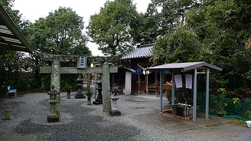
で、そんな足手荒神、甲斐宗立の無念を知ってか知らずか大勢の参拝者が訪れているようだ。
受付には手形足形が置かれている。
ここに名前やら住所やらを書いて奉納するシステムになっているようだ。
拝殿前の灯籠の上にはチンチンした狛犬がいた。
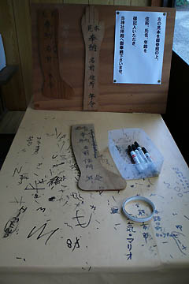 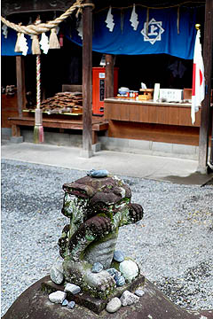
で、ゴッソリ積まれた手形足形。
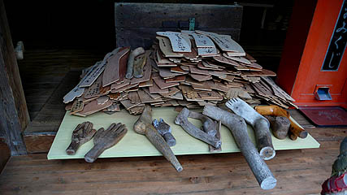
フォーマット化された手形足形の前には自作の手形足形が並んでいる。
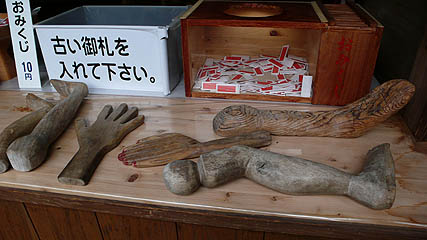
木で丁寧に作られた手形足形。
ツヤツヤしているのは多くの人に撫でられたからだろうか。
中指だけが短い手形。
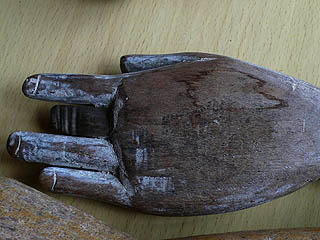
奉納した人がみな彫刻の素養があるわけではないのだろうが、どれも丁寧に作られている。
中にはあまりにもリアルに作ってある足形などもあり、ゾッとする。
それだけ深刻な手足の悩みを抱えていた事が伺える。
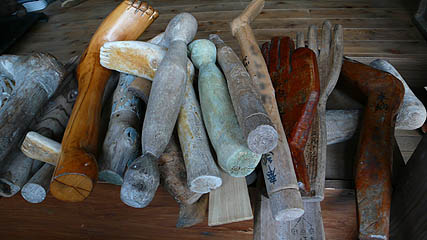
足の甲に穿たれている穴は木の節なのだろうか。
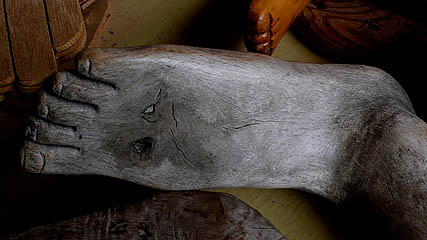
手形足形だけではなく装具やギプスなども奉納されている。
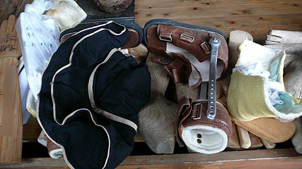
松葉杖、コルセット、装具、義足…手足の悩み、と一言で片付けるのは簡単だが当事者にとっては例えようもない程大きな悩みであることは想像に難くない。
両足揃った足形に書き込まれた奉納者の年齢があまりにも幼かったのが印象的だった。
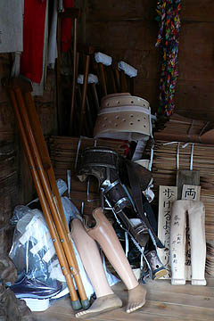
何千何万という真剣かつ深刻な願い事が渾然一体となって迫ってくる。
その圧倒的な迫力に思わず息が詰まりそうになる。
本殿裏には大量の手形足形が詰まれていた。
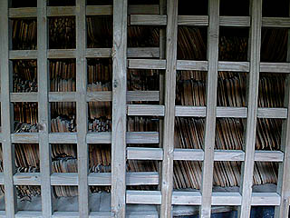
紐で纏められ積み上げられてはいるが、一枚一枚に真剣な願いが記されている事を忘れてはならない。
うず高く積まれた手形足形の上には足がポツンと乗っていた。
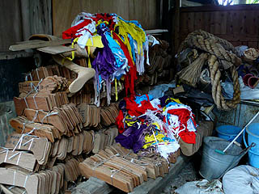 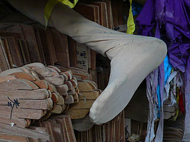
この足を奉納した人の願いは甲斐宗立に届いたのだろうか？
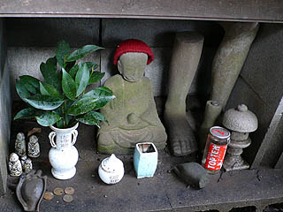 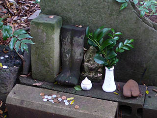
本殿脇には石の足形があった。ココまで来ると石工じゃないと作れないだろうなあ。
このような現世利益、しかもかなり具体的な御利益を求める民間信仰の光景に強く惹かれるのは奉納者である個人と神仏が直接コンタクトを取る際の、人間の神仏に対する恐れすら越えなければならない真摯な祈りの姿勢が奉納物を通して如実に見えてくるからだと思う。
2007.12.
珍寺大道場 HOME